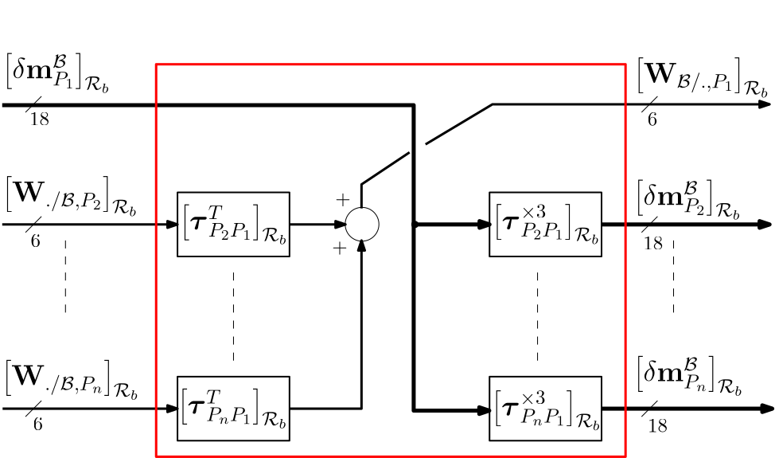
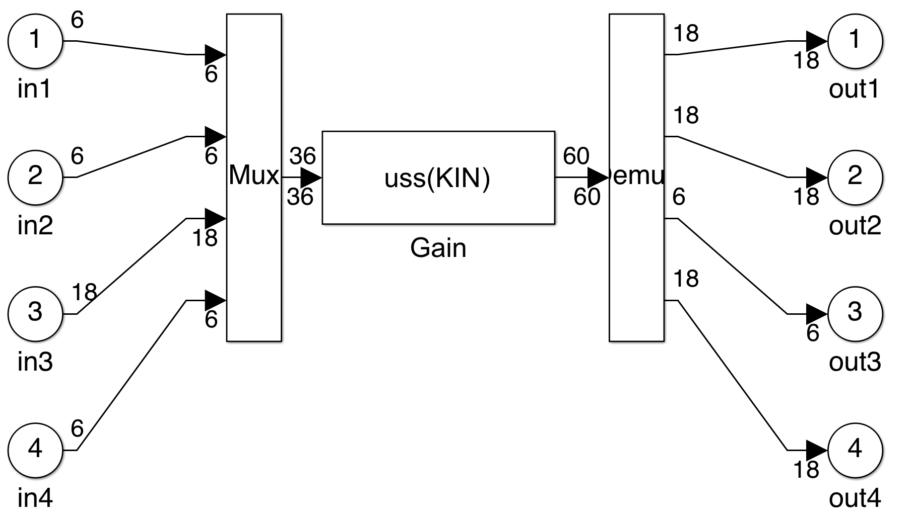

massless connection body
Considering a fictitious massless body $\mathcal{B}$, this block allows to transport the motion vector from a given point (or port) $P_j$ to other points $P_i$, $i=1,\cdots,\,n;\;i\neq j$ and to compute the resultant wrench at point $P_j$ from the wrenches applied at points $P_i$.
- $P_j$ is the connection port with a parent body.
- $P_i$ ($i=1,\cdots,\,n;\;i\neq j$) are the connection ports with child bodies.
- All wrenches and acceleration twists are expressed in the body reference frame $\mathcal{R}_b$.
It results in a $(18n-12) \times (6n+12)$ gain.
This block can be used to extend the number of ports (limited to $5$) of the bock Multi port rigid body.
See also: General notations, multi-port rigid body
Contents
Description
In the case the parent port $P_j$ is $P_1$, the block diagram of this block is depicted in the following figure. $\boldsymbol\tau_{PiPj}$ is the kinematic model between points $P_i$ and $P_j$ and $\boldsymbol \tau_{PiPj}^{\times 3}=\mathrm{diag}\left(\boldsymbol \tau_{PiPj},\;\boldsymbol \tau_{PiPj},\,\boldsymbol \tau_{PiPj}\right)$

Ports
The input and output ports and their ordering depends on the number $n$ of given points and on the index $j$ specifying the parent point.
Inputs:
- m_Pj: the motion vector (units: $m/s^2$, $rd/s^2$, $m/s$, $rd/s$, $m$, $rd$) at the parent point $P_j$ in the body frame $\mathcal{R}_b$: $\left[\delta\mathbf m^{\mathcal B}_{P_j} \right]_{\mathcal{R}_b}$
- W./body,Pi: the wrenches (units: $N$ and $N.m$) applied to the body $\mathcal{B}$ at the $n$ different child points $P_i$ with $i=\{1,... n\}$ and $i\neq j$ in the body frame $\mathcal{R}_b$: $ \left[\mathbf{W}_{./\mathcal{B},P_i}\right]_{\mathcal{R}_b} $
Outputs:
- Wbody/.,Pj: the wrench (units: $N$ and $N.m$) applied by the body $\mathcal{B}$ to the parent body at point $P_j$ in the body frame $\mathcal{R}_b$: $ \left[ \mathbf{W}_{\mathcal{B}/.,P_j} \right]_{\mathcal{R}_b} $
- m_Pi: the motion vector (units: $m/s^2$, $rd/s^2$, $m/s$, $rd/s$, $m$, $rd$) at the child point $P_i$ ($i=\{1,... n\}$ and $i\neq j$) in the body frame $\mathcal{R}_b$: $\left[\delta\mathbf m^{\mathcal B}_{P_i} \right]_{\mathcal{R}_b}$
Parameters
All parameters are expressed in the body frame $\mathcal{R}_b$. Each parameter can be an uncertain parameter declared with "ureal".
The main parameters are:
- the number of points $n$,
- the index $j$ of the parent point (between $1$ and $n$)
- the $3\times 1$ vectors $\overrightarrow{OP_i}$, the positions of the connection points $P_i$ in $\mathcal{R}_b$ (unit: $m$), $i=1,\cdots,n$.
Simulink diagram under the mask
The Simulink block is built by the initialization according to the parameters in the dialog box. Example with 4 ports and $j=3$:
